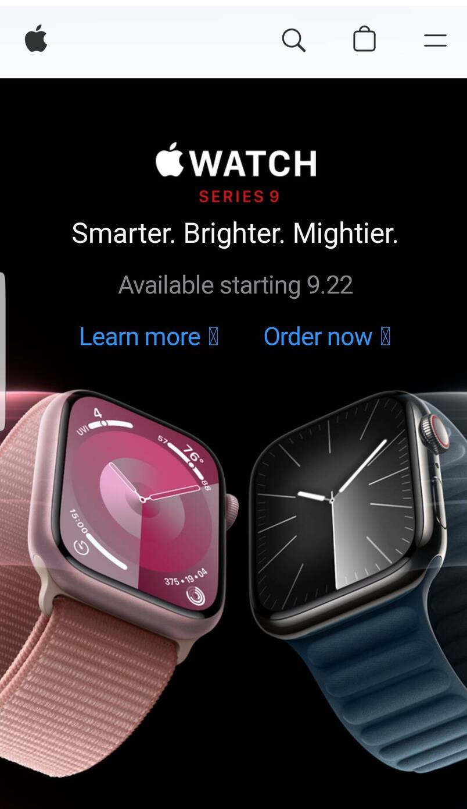

Contrast and visual Hirachy
APPLE
apple.com The contrast ratio between black and white is as high as 21:1 according to the WAAG(Web Content Accessibility Guidelines) which passes the AA and AAA for normal text, large text and Graphical object and user interface component(contrast). Also, still from the same screenshot, we easily notice a hirachy in the aligment in font size. We notice descending order aligment in font sizes with "WATCH" being bigger followed by "Smart. Brighter. Mighter." which is less bigger and "Available Starting 9.22" being smallest (visual Hirachy).
Repetition and proximity
TOSHIBA
toshiba.comOn the above screenshot from the toshiba website, we obseve two sectons with each section composed of an image, a heading text, a paragraph text and a lean more link which are closer together than they are closer to elements from the next section, likely showing a relationship between those elements(proximity). On the other hand, we observe a repetion in the disposition of elements in each section (image, heading text, paragraph tex and link) as well as a repetion of sections themselves.
White spaces and Fitt's law
SPACEX
spacex.comVery few text on the screenshot leaving an empty space both from the top and and bottom makes it look less congested as well as the "LEARN MORE" tex in the botton is spaced out from the borders of the botton making it look visualy apealing (white spaces). Notice the size of the button which makes it easy to be found because it is big in size and eveident making it stand out (This designer definitely applied the Fitt's Law principle).